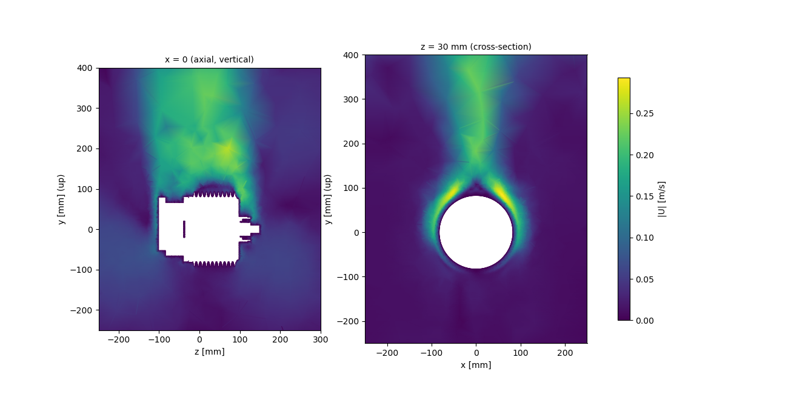
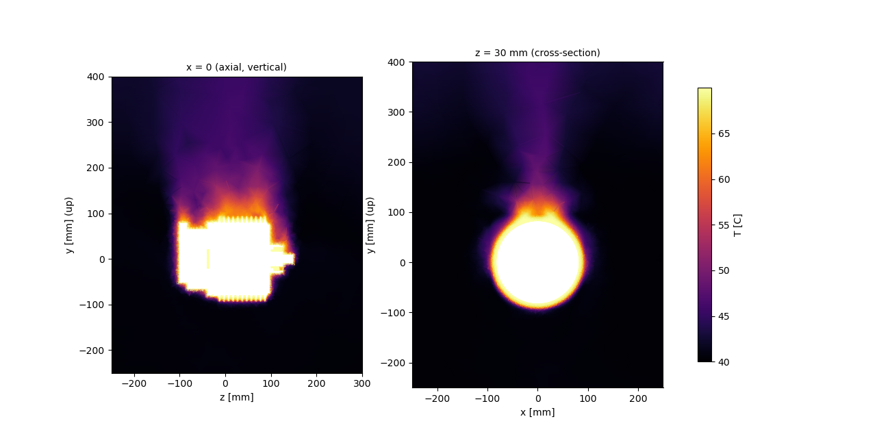
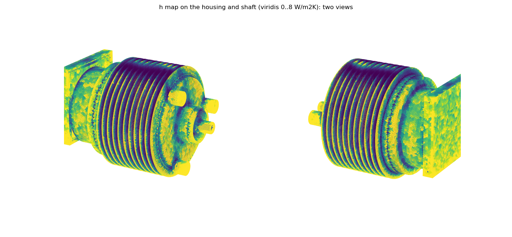
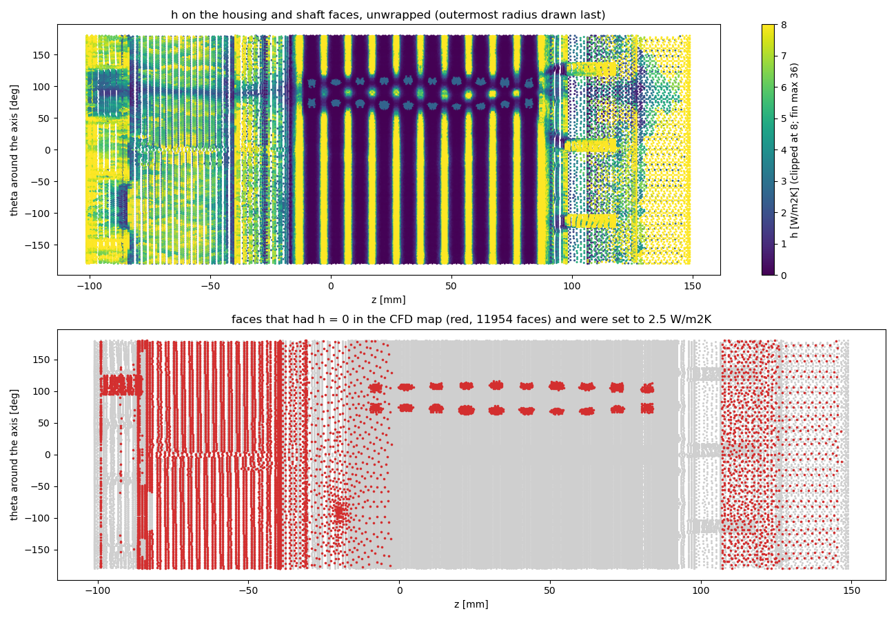

Airflow
External natural-convection air CFD for the h map, and the lumped treatment of the internal air.
S9 External-air CFD (h map) — pending
S9 - External-air CFD (h map) (AIR agent, 2026-10-24) - h MAP NOT YET PRODUCED (run in progress, U gate not yet passed)
- Domain: box x +-330, y -330..520 (y up), z -330..420 mm, around the SIMPLIFIED housing envelope (
scripts/u666_air_mesh.py: housing parts + cavity fillers + fin-root fill r<80.2 (0.2 mm root slots) + shaft stub r10 to z 148.85). Mounting unknown -> ASSUMED suspended, no feet/plate (logged). Motor skin 0.2913 m2. - Mesh: gmsh HXT, S_FIN 1.8 / S_SKIN 5 / S_FAR 60 mm -> 1.229 M tets (
mesh/u666/air_hxt.msh), min SICN 0.139, nonorth max 79 deg, 253 faces > 70. Fin gap 2.8 mm (root) to 8.8 mm (tip) is only 1.5-5 cells wide: h on fin flanks is coarse. Slivers removed: 0.1 mm box-rim step (BOX z1 -83.7), 0.2 mm boss-base step (K['BOSS_DZ']=0, air script only; knob added to housing_simple.py, default unchanged); fills() axis radius 0.01 -> 0 (axis void). - BCs: motor T fixed 343.15 K (assumed ~70 C skin, dT 30 K, laminar), walls of the closed box at 313.15 K ambient (40 C), g (0 -9.81 0), gravity -y, shaft z horizontal. Radiation is NOT in the CFD; make_case adds eps 0.1 (bare Al) separately.
- Solver changes vs old air_case.sh (steady SIMPLE failed: T<0, FPE; KNOWN_ISSUES 12): GAMG smoother GaussSeidel (DIC coarsest crashed), localEuler pseudo-transient (maxCo 3), upwind, nonOrth 2, limitTemperature 300..345 K, laplacian corrected 0.33. Cost 8-12 s/iteration on 4 procs.
- KEY FINDING: localEuler with maxDeltaT 5 s gives a non-physical flow (domain mean 10 m/s, U max 46-49 m/s, closed or open box; aircheck gate fails). maxDeltaT 0.02 s: U max 0.24 m/s, mean 0.054 at 1.2 s (physical). Current run MDT 0.1 (case ~/cfd/u666_air, tmux s9, chunks 300/600/..., gate in script).
- Prepared, untested:
scripts/u666_air_post.py(h = |q|/(Tw-Ta) mapped to housing/shaft defaultFaces of the base case, area-weighted means fins/end walls/body, Churchill-Chu + Elenbaas check), format =--h-filejson of u666_make_case.py. - Open: no h values, no correlation check yet. Expect (to verify) h_conv 3-6 W/m2K. Fallback if the run cannot pass the gate: uniform H_NAT 5 W/m2K + eps 0.1 in make_case (already default).
## S-report - live HTML report (REPORT agent, 2026-10-24)
python scripts/u666_report.pyregeneratesReport/U666_report.html(method S0-S11 from this log, geometry/mesh figures, per-duty blocks, feedback table).--no-renderskips the WSL step.- Render step
scripts/u666_report_render.sh(WSL,nice -n 19, single thread, python3 vtk + matplotlib):geo(cached; foamToVTK of ~/cfd/u666_base_nc, cuts z = 30 mm and y = 0) andduty <case> <out>(curves, contours, GIFs <= 3 MB from postProcessing; names matched by regex inscripts/u666_report_duty.pySURF/REGKEY). - Duty case default
~/cfd/u666_<duty>; override inresults/u666/report/sources.json. Optional hand notes:results/u666/report/observations_<duty>.md. - Duty path tested only on synthetic data (plane + volFieldValue names are a guess until the chain handoff names them).
## S-report2 - multi-page site (REPORT2 agent, 2026-10-24)
.venv\Scripts\python -I scripts/u666_site.py [--no-render]regeneratesReport/U666_site/(11 pages, assets/ as files, light/dark, phone width). Geometry render viau666_report_render.sh geo(cached, nice 19). Duty curves, peak tables and time-to-limit are read from\wsl.localhost\...\<case>\postProcessing/<region>/<fo>/<t>/*.dat(tested on u666_e2); case =results/u666/report/sources.jsonelseu666_<duty>. Pending: contours, mp4, 3D viewer, air figures, per-region mesh pictures (see handoff/u666_report_handoff.md). Old single pages (u666_report*.py) are obsolete.
S9 (final) - External-air h map (AIR agent, 2026-10-24) - DONE
- Run: localEuler maxDeltaT 0.1, 450 iterations (stopped at 450 by endTime edit). U max 0.31 m/s (p99 0.26, mean 0.085) - gate (<=5) met. Motor heat Q: 57 W @100, 35.9 @200, 32.4 @300, 35.4 @325, 34.8 @350, 34.7 @375-400, 34.5 @425, 34.6 @450 -> flat to 0.3 % over the last 100 iterations; p_rgh residual ~3e-4. Converged; no extension needed.
- Post (
u666_air_post.py, fixed): (1) base-case geometry is in m but class thresholds in mm -> fin class was empty; now converted. (2) housing/shaft faces farther than 3 mm from the air skin (not external skin: housing 317 cm2, shaft stub 37 cm2) get h = 0 (map dist max was 23-33 mm), but they still receive radiation eps 0.1 in make_case (small error, noted). Output~/cfd/u666_air_h.json(+_summary.json). - Mean convective h (area-weighted, zeros included): fins 2.76 (1766 cm2), body 4.48 (858 cm2), end walls 5.44 (758 cm2), shaft stub 3.20, air-skin mean 3.95 W/m2K, total 34.6 W at dT 30 K (T_wall 70 C assumed, ambient 40 C).
- Correlation check: Churchill-Chu horizontal cylinder D159 4.64, D185 4.56; Elenbaas fin channel 4.41 (tip gap) / 0.27 (root gap). CFD air-skin mean 3.95 is -15 % vs CC; fins 2.76 is -40 % vs CC (-37 % vs Elenbaas tip) i.e. inside the 50 % limit, slightly outside 30 %; zero-h faces dilute the fin mean. Coarse fin mesh (1.5-5 cells per gap) is the likely cause.
- Dependence: h computed at dT 30 K fixed, not at the duty skin temperature (natural convection h ~ dT^0.25).
Mesh and boundary conditions
| Item | Value |
|---|---|
| domain | x +-330, y -330..520, z -330..420 mm (y up), closed box |
| mesh | 1.229 M tets (HXT), S_FIN 1.8 / S_SKIN 5 / S_FAR 60 mm; min SICN 0.139; non-orth max 79 deg |
| motor skin | 0.2913 m2, T fixed 343.15 K (assumed 70 C) |
| box walls | 313.15 K, noSlip |
| solver | localEuler pseudo-transient, maxCo 3, upwind, GAMG/GaussSeidel; maxDeltaT must be <= 0.1 (5 gives non-physical 10 m/s) |
h map and correlation check
Air CFD result


h classes vs correlations
| Class | area [cm2] | mean h [W/m2K] | max h |
|---|---|---|---|
| fins | 1766 | 2.76 | 36.3 |
| end_walls | 758 | 5.44 | 19.6 |
| body | 858 | 4.48 | 18.0 |
| all_housing | 3381 | 3.79 | 36.3 |
| shaft_stub | 61 | 3.20 | 16.5 |
| Reference | h [W/m2K] | comment |
|---|---|---|
| CFD skin mean | 3.95 | area-weighted over the mapped faces, skin 70 C |
| Churchill-Chu, D 159 / 185 mm cylinder | 4.6 / 4.6 | smooth horizontal cylinder |
| Elenbaas, fin tip / root | 4.4 / 0.27 | parallel plates; the root is choked |
| fins in the CFD | 2.76 | 40 % under the correlation: fin gap only 1.5-5 cells wide (inside the 50 % gate; knob) |
h map on the housing


Decision: unmapped faces 0 to 2.5 W/m2K
Housing and shaft faces more than 3 mm from the air skin (fin-root fill, terminal-box interior, front shaft bore) have no air neighbour in the CFD, so the map gave h = 0 (adiabatic). There are 11954 such faces, 387 cm2 of 3442 cm2 (11 %). They are now set to 2.5 W/m2K (enclosed-cavity natural convection; radiation eps 0.1 unchanged); the original map is kept as u666_air_h.json.h0bak. Applies from duty2; duty1 (5 min) used 0, negligible on a 5 min transient. CALIBRATION KNOB (S9 MAIN decision below).
Internal air
The internal end spaces are not resolved: a lumped inair region (rho 10, cp 718, k_inair = (15 + 6.75 (omega r)^0.65) x 0.01 m) takes the windage heat and conducts to winding ends, housing, rotor and endcaps. CALIBRATION KNOB
Generated 2026-10-24 14:23 by scripts/u666_site.py from results/u666/steps_log.md and the case data.